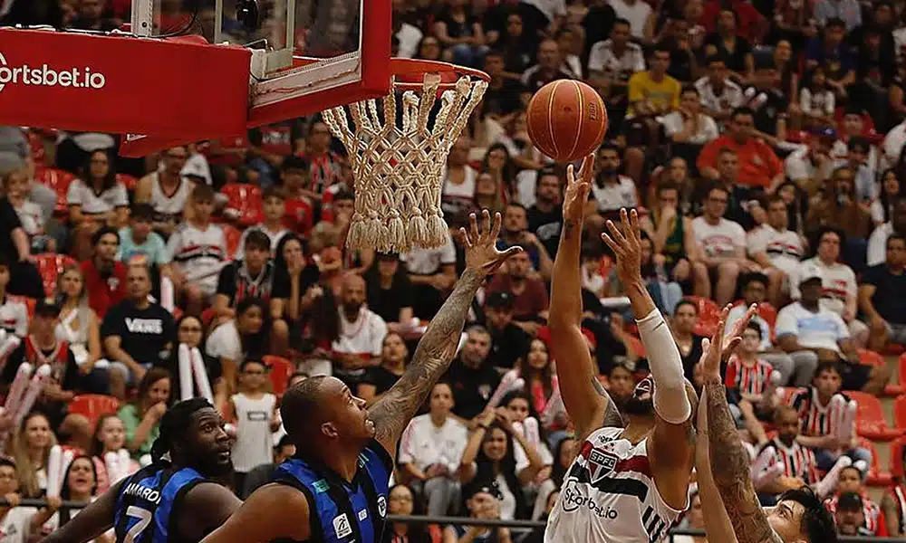

O basquete é um dos esportes mais populares do mundo. Só para se ter uma ideia, a Federação Internacional de Basquetebol (Fiba) conta que já são mais de 300 milhões de praticantes filiados, espalhados em mais de 170 países.
Se esse número de praticantes já surpreende, imagine quantos fãs o esporte também não acumula ao redor do globo. Essa popularização está relacionada à facilidade de jogar e também pela paixão que o basquete desperta nas pessoas. E no Brasil, isso não seria diferente. Apesar de vivermos no país do futebol, o basquete é muito forte e conta com milhares de praticantes.
